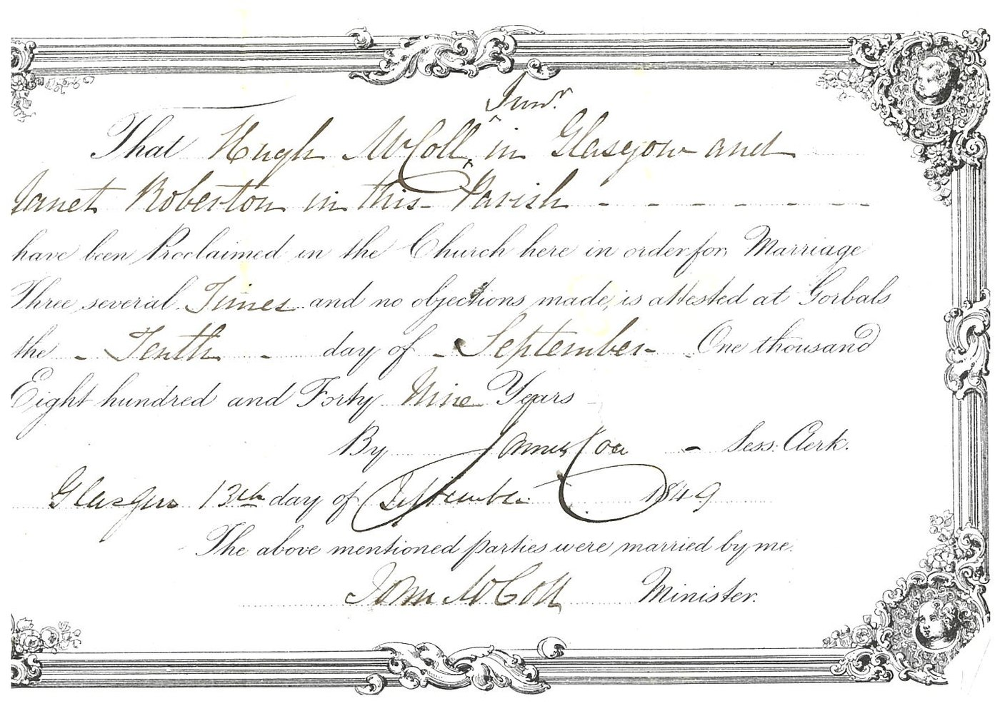
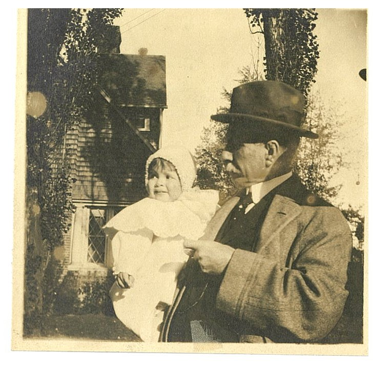
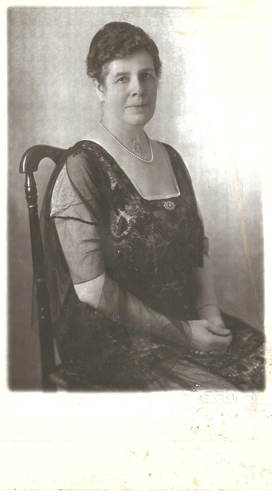
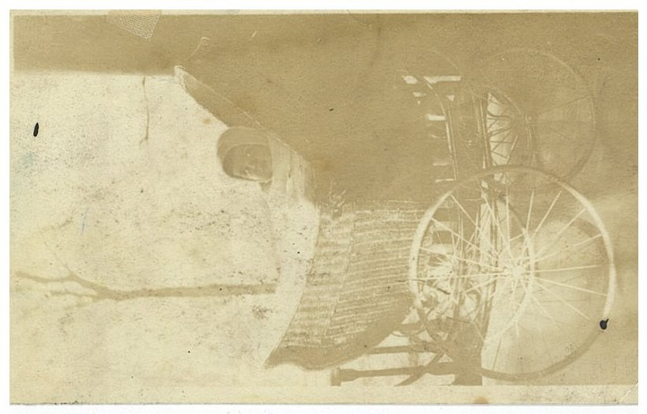
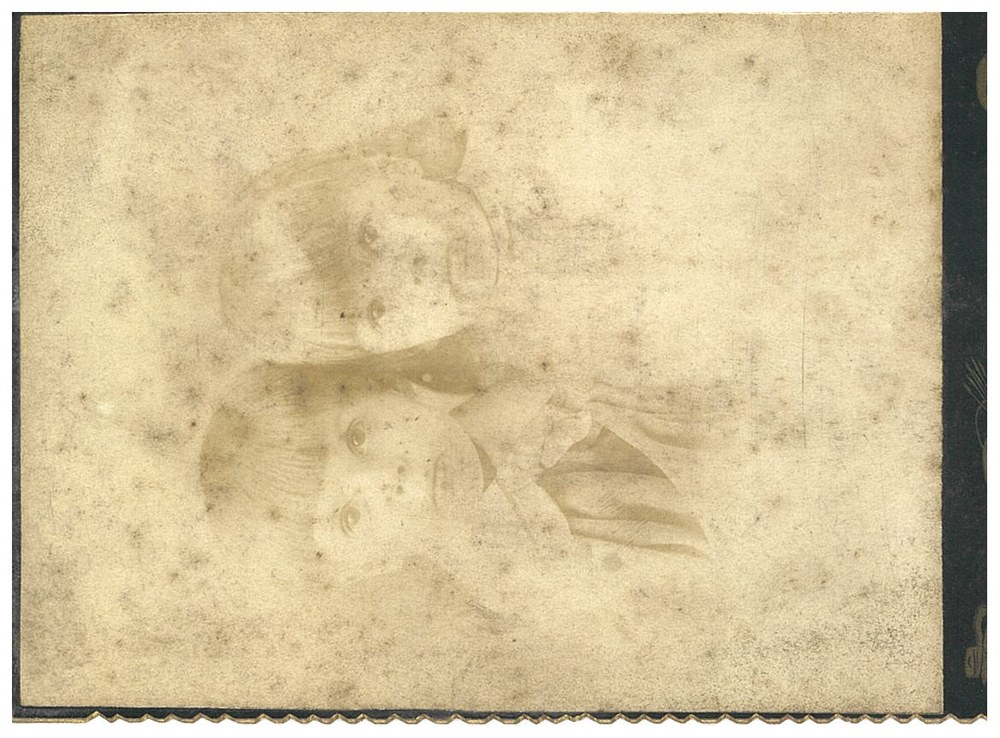
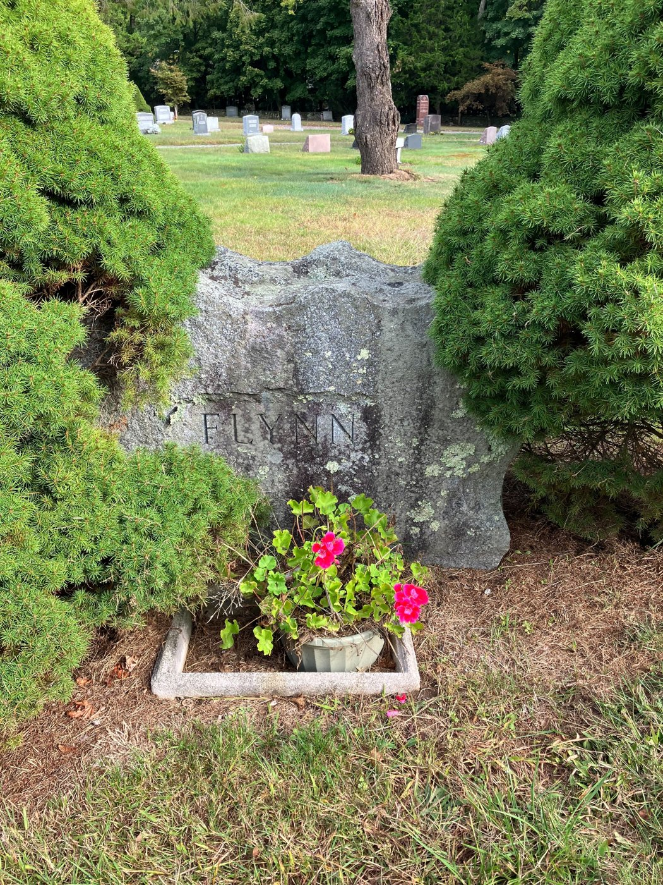
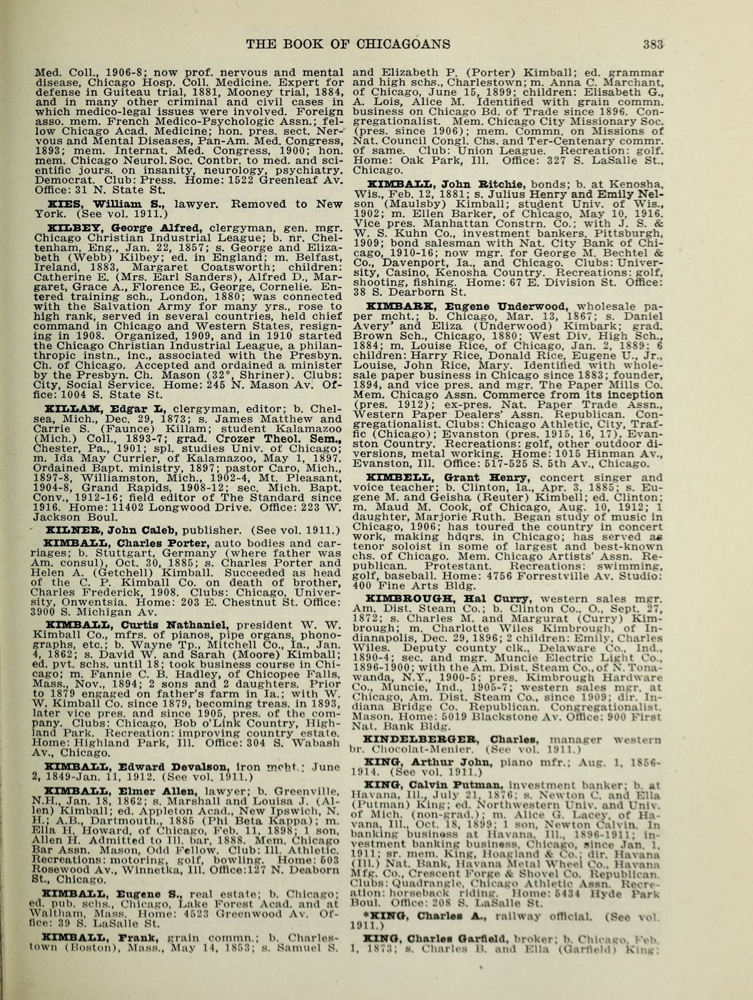

<meta charset="utf-8">
<meta name="viewport" content="width=device-width, initial-scale=1">
<meta name="robots" content="noindex">
<title>MacColl: Mull to the Mills</title>
<link rel="stylesheet" href="style.css">

<nav>
  <a href="index.html">Home</a>
  <a href="quintanilla.html">Quintanilla</a>
  <a href="martinez.html">Martinez</a>
  <a href="flynn.html">Flynn</a>
  <a class="here" href="maccoll.html">MacColl</a>
</nav>

<main>
<h1>MacColl</h1>
<p class="sub">My father's mother's line. Highland crofters and Glasgow tailors who turned into a Rhode Island mill dynasty, and the one family on this whole tree that kept fifty feet of its own paper, so you can actually watch it happen.</p>

<p>Most families keep a shoebox. The MacColls kept an archive. Sixteen linear meters of letters, certificates, photographs, and hand-drawn family trees, spanning 1811 to 1974, sit today in the <strong>Lochaber Archive Centre in Fort William, Scotland</strong>, catalogued as collection GB3218 L/D73 <span class="badge proven">Proven</span>. Because of that hoard, this line doesn't rest on guesswork; it runs on real paper, much of it in the family's own hand, back into the Scottish Highlands of the 1700s. Here is the whole thing, oldest first.</p>

<h2>Mull, in the 1700s</h2>
<p>The oldest names come off a tree that <strong>James Roberton MacColl</strong> (the mill man you'll meet in a minute) drew up himself, from information supplied by a Dr. Hector MacColl of Tobermory, on Mull. At its head stand <strong>John MacColl, a farmer on the Isle of Mull, and his wife Margaret Campbell of Ardnamurchan</strong> <span class="badge probable">Probable</span>, whose six children were born in the 1770s and scattered from Mull to Glasgow to Canada and Australia.</p>

<figure>
  
  <figcaption>The "MacColls of Mull" tree, drawn up by James R. MacColl from Dr. Hector MacColl of Tobermory (born 1799). At the head, John MacColl and Margaret Campbell of Ardnamurchan; their son, listed "(3) Hugh m. Agnes Currie, born 1777," is the tailor's father. Lochaber Archive Centre, GB3218 L/D73.</figcaption>
</figure>

<p>One of those children was <strong>Hugh MacColl, born 1777, a Glasgow clothier and tailor, who married Agnes Currie</strong> <span class="badge proven">Proven</span>. For a century the family only half-believed this rung; the 2026 archive scans settled it with two death records, "Ann [Agnes] Currie, wife of Hugh McColl Senr, clothier," who died in 1844 aged 64, and "Hugh McColl, tailor, 3 Germiston Street," who died in 1852 aged 74. The Currie side reaches back one step further, to an <strong>Alexander Currie who died in 1806 aged 64</strong>, buried in the same Glasgow lair <span class="badge probable">Probable</span>. So the Highland root of this line is now solid into the mid-1700s.</p>

<h2>Glasgow: tailors and an iron foundry</h2>
<p>Hugh of 1777's son was another <strong>Hugh MacColl, a tailor in Glasgow, 1813-1882</strong> <span class="badge proven">Proven</span>. On September 13, 1849 he married <strong>Janet Roberton</strong> in the Gorbals district, and the marriage record is one of the papers now scanned from Fort William.</p>

<figure>
  
  <figcaption>The 1849 marriage of Hugh MacColl and Janet Roberton, proclaimed and married in the Gorbals that September. Lochaber Archive Centre.</figcaption>
</figure>

<p>Janet brought the more prosperous blood. Her father was <strong>James Roberton, an iron founder in the Gorbals</strong> <span class="badge proven">Proven</span>. The 1851 census has him running a foundry of 52 men; the 1894 history <em>Glimpses of Old Glasgow</em> names "the much-esteemed Bailie Roberton" proprietor of the Gorbals Iron Foundry on Malta Street; and the old post-office directories carry the firm Roberton &amp; Wilson into the 1860s. He was born about 1794 and died, as his daughter's own recollections record, on November 19, 1868, aged 74. So Hugh the tailor married a step up, into foundry-owning, magistrate stock. Janet's mother was another Janet, from the coast at Dunoon; the maiden name the records give is uncertain, either Bankhead or Westwood. And behind James the founder stands a probable further generation, a <strong>John Roberton, engineer of Tradeston</strong>, married to Janet Ralph, who appears in the Glasgow directories as early as 1816 and whose daughter Elizabeth's death record sits in the archive, very likely James's own father <span class="badge probable">Probable</span>.</p>

<h2>The tailor's son who built a mill empire</h2>
<p>One of Hugh and Janet's sons changed the family's whole altitude. <strong>James Roberton MacColl</strong>, born April 2, 1856 in Glasgow <span class="badge proven">Proven</span>, trained in the textile trade, visited America in 1881, met the Sayles brothers who were launching a new mill, and came back for good in 1882 to manage the <strong>Lorraine Mills</strong> in Pawtucket, Rhode Island. He ran Lorraine for essentially fifty years, agent to treasurer to president. He married a Glasgow girl, <strong>Agnes Bogle</strong>, in 1884, and raised six children in Rhode Island, sons who went to Harvard and Princeton and into the mills.</p>

<p>He became a genuinely big figure in American textiles: president of the National Association of Cotton Manufacturers, chairman of the 1919 World Cotton Conference, a bank president on the side, head of Rhode Island's British war-relief effort in the First World War. When he died at home in Providence on November 23, 1931, the trade press ran his obituary with a portrait. The tailor's son from Tradeston died a Yankee industrialist. And the archive gave up something no register can, the first faces on this entire line.</p>

<figure>
  
  
  
  
  <figcaption>Four of the six family photographs in the collection. The gentleman in the studio portrait was photographed in <strong>Pawtucket, Rhode Island</strong>, and is almost certainly <strong>James Roberton MacColl</strong> himself; the same man, older, stands outside the Providence house holding one of his grandchildren. The seated woman is one of the MacColl women of the household, most likely his wife Agnes Bogle. The young man in the light suit was photographed in <strong>Cambridge, Massachusetts</strong>, and is one of James's sons in his college years, a Harvard boy.</figcaption>
</figure>

<figure>
  
  
  <figcaption>The other two photographs, a pram and two small children, have faded almost to ghosts; they are past making out, but they are here for completeness. Every scrap the family kept.</figcaption>
</figure>

<p>And a strange echo across my father's two sides: James, the mill magnate, and the Flynn line's Donald both died in the fall of 1931, five weeks apart, one at 75, one at 33. Their descendants married each other twenty-two years later.</p>

<h2>Down to my grandmother</h2>
<p>James's son <strong>Norman Alexander MacColl</strong>, born 1895 in Warwick, Rhode Island <span class="badge proven">Proven</span>, married <strong>Mary Kimbark</strong> of Evanston, Illinois in 1924, of a prominent early-Chicago family, there is a Kimbark Avenue in Hyde Park, and her father ran a paper company and led the Chicago Association of Commerce. Norman and Mary's daughter <strong>Joan MacColl</strong>, born in Providence in 1930, is my grandmother. She married Donald White Flynn Jr. in 1953, was widowed young when he died in 1973, later remarried, and died in 2013, buried with Donald and their son John at Glenwood Cemetery in East Greenwich <span class="badge proven">Proven</span>.</p>

<figure>
  
  <figcaption>My grandmother Joan, Glenwood Cemetery, East Greenwich, Rhode Island.</figcaption>
</figure>

<h2>What the American marriages carried in</h2>
<p>That marriage to Mary Kimbark did something the family only half-knew: it spliced two deep colonial lines into ours, both coming in sideways through her.</p>

<p>The first runs all the way to the <em>Mayflower</em>. Through the Kimbarks, my father's line goes straight back to <strong>Richard Warren, a passenger on the Mayflower in 1620</strong> <span class="badge proven">Proven</span>, by way of his daughter Elizabeth, the old Massachusetts Church and Rice families, down to Mary Louise Rice, who married Eugene Underwood Kimbark, whose daughter Mary married Norman MacColl. The General Society of Mayflower Descendants already has this documented and approved down to Mary Kimbark, through a relative's application; I'm finishing the last stretch, Joan down to my own son, to join in my own right. One rung is even reachable past the boat: Richard Warren's wife, Elizabeth Walker, had a father, <strong>Augustine Walker of Great Amwell</strong>, whose 1613 will names "my daughter Elizabeth Warren wife of Richard Warren," a real English record at roughly 1550 <span class="badge proven">Proven</span>. Past Augustine the trail honestly ends. Warren's own parents have never been found by anyone, and the "London ancestry" that floats around online for the Church side is a known forgery, which I have deliberately left off this page.</p>

<figure>
  
  <figcaption>Who's Who in Chicago, 1917. Eugene Underwood Kimbark: son of Daniel Avery Kimbark and Eliza Underwood, married Louise Rice, six children ending with Mary, my great-grandmother, the doorway to both colonial lines.</figcaption>
</figure>

<p>The second Kimbark line runs the other way across the Atlantic. The name is German. It descends from <strong>Johann Matthias "Theiss" Gimberg</strong>, who married at <strong>Neuwied on the Rhine in 1719</strong> and, in 1726, petitioned the local prince for permission to emigrate to America, his actual petition papers still filed in the Neuwied archive today. He crossed that year, joined the Reformed church in New York, and settled up the Hudson in Orange County, where over three generations the name drifted from Gimberg to Kimberg to Kimbark. His father, <strong>David Gimberg of Stein near Beilstein</strong>, is named a generation deeper still, a man living in the late 1600s, and the Neuwied church registers that record this family run back to 1667 <span class="badge proven">Proven</span>. The one soft spot is the weld: the link from my documented Chicago Kimbarks, up through Mary's grandfather Adam Kimbark, born 1798 in upstate New York, to that colonial immigrant is published by the genealogist who worked it as a "Proposed Ancestry," so I grade that specific connection <span class="badge probable">Probable</span>. The German family is proven; that my own line ties into it is the near-certain but not-yet-nailed part.</p>

<h2>The family that kept everything</h2>
<p>Come back, finally, to that fifty feet of paper in Fort William, because it holds more than names. It holds the original 1849 marriage certificate, Hugh's courtship letters to Janet, a letter to Janet from her mother in Dunoon in 1851, six family photographs, James's correspondence home from Rhode Island through 1942, the compiled tree, and Janet's handwritten "Recollections of my beloved father," James Roberton the iron founder, "who died 19th November 1868 aged 74 years," exactly matching his death record. For the first time on this line, we don't just have names and dates. We have voices.</p>

<blockquote>
<p>"On rising to go to take to tea he remarked to Mary his granddaughter, 'Well, I'm not rested yet, but I'll get a long rest after tea.' After taking tea, in good spirits, Mary left him, little thinking she would never again see her dear grandpapa in life. Less than an hour afterwards he passed gently away without a struggle. Truly, he was not, because God took him."</p>
<p>Her mother, writing from the coast at Dunoon in 1851, watched a storm die to a calm over the firth and thought of God "who alone can say to the sea, be calm." And Hugh, courting Janet before their wedding, opened a Friday-night letter: "I have been thinking about yourself, by no means an uncommon thing as you may suppose, and it has occurred to me that as I could not see your face so often as I would like, there was nothing to prevent me thus to commune with you."</p>
</blockquote>

<p>The <a href="documents/maccoll-papers-transcriptions.md">full transcriptions</a> of the recollections and the letters are here.</p>

<h2>The paper trail</h2>
<ul class="docs">
  <li><a href="documents/maccoll-finding-aid.pdf">The MacColl papers: full 103-page catalog (PDF)</a><span class="doc-what">Every item in the family's 16-meter archive at the Lochaber Archive Centre, Fort William, described.</span></li>
  <li><a href="documents/maccoll-mull-tree-v2.jpg">The "MacColls of Mull" family tree (archive scan)</a><span class="doc-what">James R. MacColl's own compiled tree, from Dr. Hector MacColl of Tobermory. John MacColl and Margaret Campbell of Ardnamurchan at the head; Hugh married to Agnes Currie (born 1777) as the tailor's parents.</span></li>
  <li><a href="documents/maccoll-1849-marriage-cert-v2.jpg">Hugh MacColl and Janet Roberton, 1849 marriage record</a><span class="doc-what">The Gorbals proclamation and marriage, September 1849.</span></li>
  <li><a href="documents/maccoll-papers-transcriptions.md">Transcriptions: the recollections and letters</a><span class="doc-what">Janet's account of her father's death, her mother's 1851 letter from Dunoon, and Hugh's courtship letter, transcribed.</span></li>
  <li><a href="https://archive.org/details/sim_textile-world_1931-11-28_80_22">Textile World, November 28, 1931: James R. MacColl's obituary, with portrait</a><span class="doc-what">Died November 23, 1931 at home in Providence. Fifty years at Lorraine, in the industry's own paper.</span></li>
  <li><a href="https://www.electricscotland.com/history/descendants/chap82.htm">"Scots and Scots' Descendants in America": his biography chapter</a><span class="doc-what">Born Glasgow, April 2, 1856; parents Hugh and Janet; the 1882 crossing. Published while he was alive to check it.</span></li>
  <li><a href="https://www.rihs.org/mssinv/Mss006sg18.htm">Lorraine Manufacturing Co. records, Rhode Island Historical Society</a><span class="doc-what">The mill's own archive. MacColls ran it from February 1882 until it closed in 1953.</span></li>
  <li><a href="https://ancestors.familysearch.org/en/K233-NGF/james-roberton-maccoll-sr-1856-1931">James Roberton MacColl Sr., 36 attached records</a><span class="doc-what">Passports, censuses, the Rhode Island births of his children.</span></li>
  <li><a href="https://archive.org/details/whoswhoinchicago00leon_1">Who's Who in Chicago, 1917: the Kimbark entry</a><span class="doc-what">Eugene Underwood Kimbark, my great-great-grandfather and the doorway to the Mayflower and German lines.</span></li>
  <li><a href="https://www.findagrave.com/memorial/247431836/joan-flynn_brennan">Joan MacColl Flynn Brennan, 1930-2013</a><span class="doc-what">My grandmother, linked grave to grave to her parents, husband, and son.</span></li>
</ul>

<h2>Still hunting</h2>
<p>The Scottish civil registration of James's 1856 birth as backup, Norman's 1988 obituary, and the last vital records to finish my own Mayflower application, my grandmother Joan down to my son.</p>
<p>Two threads would each push a wall back. On the Roberton side, James the iron founder's 1868 death record is now in hand from the archive; confirming whether his father was that John Roberton, the Tradeston engineer, would carry the line back another generation and toward the Stirlingshire registers of the mid-1700s. And on the German side, the Beilstein-area church registers, one archive up the Rhine from Neuwied, are where the Gimberg/Kimbark line would push past David Gimberg into the 1600s and earlier.</p>

<div class="footer"><p><a href="index.html">Back to all four lines</a></p></div>
</main>
